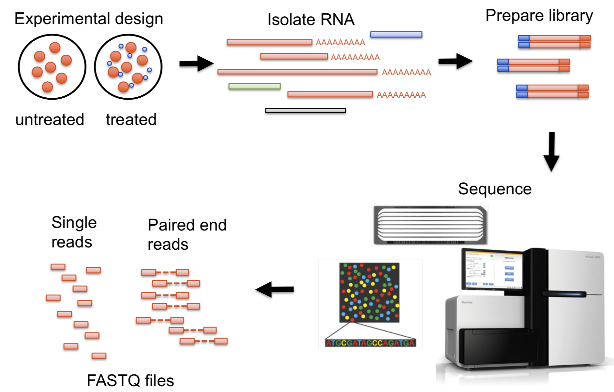

Omics Data
With a focus on high-throughput sequencing data
CFAES Bioinformatics Core, OSU
2025-08-26
Goals for this lecture
A brief general overview of omics data
An intro to high-throughput sequencing, a key technology that produces omics data
An intro to Illumina sequencing, a key HTS technology
An idea of what reference genomes are and what they are for
An overview of the course’s main example dataset
An overview of omics data
The main omics data types
Copyright ThermoFisher
The main omics data types (cont.)
| Omics type | Molecule type | |
|---|---|---|
| Genomics | DNA | |
| Epigenomics | DNA modifications | High-throughput sequencing (HTS) |
| Transcriptomics | RNA | |
| Proteomics | Proteins | |
| Metabolomics | Metabolites |
-omics
The “omics” suffix indicates the involvement of large-scale datasets — in the sense that, for example, “genomics” data typically spans much or all of the genome.
While the boundaries can be fuzzy, sequencing a single gene in a single organism is not genomics, and running qPCR for a handful of genes is not transcriptomics.
The main omics data types (cont.)
| Omics type | Molecule type | Data mainly produced by |
|---|---|---|
| Genomics | DNA | High-throughput sequencing (HTS) |
| Epigenomics | DNA modifications | High-throughput sequencing (HTS) |
| Transcriptomics | RNA | High-throughput sequencing (HTS) |
| Proteomics | Proteins | Mass Spectrometry |
| Metabolomics | Metabolites | Mass Spectrometry |
HTS and the resulting data are the focus of the rest of this lecture, and used in examples throughout the course.
Note that nearly all HTS currently involves DNA sequencing, including epigenomics and transcriptomics data (e.g., RNA is reverse-transcribed before sequencing).
Learn more in this week’s first reading
Poinsignon et al. (2023): Working with omics data: An interdisciplinary challenge at the crossroads of biology and computer science
Figure 2 from the paper.
High-throughput sequencing (HTS)
Sanger vs. high-throughput sequencing
Sanger sequencing (since 1977)
Sequencing of a single, short DNA fragment at a time. The fragment is typically PCR-amplified and therefore specifically targeted.
High-throughput sequencing (HTS, since 2005)
Sequencing of hundreds of thousands to billions of DNA fragments at a time. Fragments can be targeted in various ways or randomly generated from input DNA.
Reads and sequencing errors
Sequenced DNA fragments are referred to as “reads”. With current technologies, reads are never 100% accurate, and this has large consequences for downstream analyses.
The main HTS technologies
| Short-read HTS | Long-read HTS | |
|---|---|---|
| Main companies | Illumina | Oxford Nanopore Technologies (ONT) & Pacific Biosciences (PacBio) |
The main HTS technologies
| Short-read HTS | Long-read HTS | |
|---|---|---|
| Usage | Most common | Less common (but increasing) |
| Main companies | Illumina | Oxford Nanopore Technologies (ONT) & Pacific Biosciences (PacBio) |
| Timeline | Since 2005 — technology fairly stable | Since 2011 — still rapid development |
The main HTS technologies
| Short-read HTS | Long-read HTS | |
|---|---|---|
| Usage | Most common | Less common (but increasing) |
| Main companies | Illumina | Oxford Nanopore Technologies (ONT) & Pacific Biosciences (PacBio) |
| Timeline | Since 2005 — technology fairly stable | Since 2011 — still rapid development |
| Read lengths | 50-300 bp | 10-100+ kbp |
| Error rates | Mostly <0.1% | 1-10% (ONT) / <0.1-10% (PacBio) |
| Throughput | Higher | Lower |
| Cost per base | Lower | Higher |
The main HTS technologies
| Short-read HTS | Long-read HTS | |
|---|---|---|
| Usage | Most common | Less common (but increasing) |
| Main companies | Illumina | Oxford Nanopore Technologies (ONT) & Pacific Biosciences (PacBio) |
| Timeline | Since 2005 — technology fairly stable | Since 2011 — still rapid development |
| Read lengths | 50-300 bp | 10-100+ kbp |
| Error rates | Mostly <0.1% | 1-10% (ONT) / <0.1-10% (PacBio) |
| Throughput | Higher | Lower |
| Cost per base | Lower | Higher |
| AKA | Next-Generation Sequencing (NGS) | Third-generation sequencing |
Video of Illumina technology
Video of Oxford Nanopore technology
Video of Pacific Biosciences technology
Examples of HTS applications
- Whole-genome assembly
- Variant analysis (for population genetics/genomics, molecular evolution, GWAS, etc.)
- RNA-Seq (transcriptome analysis)
- Other “functional” sequencing methods like methylation sequencing, ChIP-Seq, etc.
- Microbial community characterization
- Metabarcoding
- Shotgun metagenomics
Read lengths
Can you think of applications where longer reads are useful?
For example:
- Genome assembly
- Taxonomic identification of single reads (microbial metabarcoding)
Can you think of applications where read length may not matter much?
For example:
- (SNP) variant analysis
- Read-as-a-tag: the goal is just to know a read’s origin in a reference genome, like in counting applications such as RNA-seq.
The two stages of many HTS analyses
HTS and other omics data analysis can often be roughly divided into two consecutive stages:
- Algorithm-heavy initial data processing
- For example: alignment of reads to a genome
- This is typically done in a Unix shell environment using a supercomputer
- These steps are often relatively standardized, automatable, and “non-interactive”
- Downstream statistical analysis and visualization
- For example: comparing expression levels of genes between groups
- This is typically done in R and is typically possible to do on a laptop
- This is often highly interactive and iterative, and less standardized and automatable than the previous stage.
Examples of HTS data analyses
Stage I
- Read quality control (QC) and trimming
- Read alignment to a reference genome
- Read taxonomic classification against a reference database
- Read assembly into a genome or transcriptome
- Variant calling
Stage II
- Differential abundance of gene (RNA-Seq) or taxon (metabarcoding) counts among groups
- Clustering/ordination and network analyses
- Genome-wide Association Studies (GWAS)
- Statistical enrichment of functional gene categories (e.g. Gene Ontology)
HTS recap
- High-throughput sequencing produces the two most prevalent kinds of omics data: genomics and transcriptomics (as well as epigenomics data)
- Three HTS technologies are most commonly used, and these produce either short (Illumina) or long (ONT and PacBio) reads
- Many different applications exist; some are not just about determining the exact DNA sequence
Illumina libraries and sequencing
Libraries and library prep
In a sequencing context, a “library” is a collection of nucleic acid fragments ready for sequencing.
We’ll go into some specifics of Illumina library prep because this is the most common type of HTS, and we’ll use Illumina read files as examples throughout the course.
In Illumina and other HTS libraries, these fragments number in the millions or billions and are often simply randomly generated from input such as genomic DNA:
An overview of the library prep procedure. This is typically done for you by a sequencing facility or company.
A closer look at the processed DNA fragments
As shown in the previous slide, after library prep, each DNA fragment is flanked by several types of short sequences that together make up the “adapters”:
Multiplexing!
Adapters can include so-called “indices” or “barcodes” that identify individual samples. That way, up to 96 samples can be combined (multiplexed) into a single library, i.e. into a single tube.
Paired-end vs. single-end sequencing
DNA fragments can be sequenced from both ends as shown below —
this is called “paired-end” (PE) sequencing:
Insert size variation
The DNA fragment’s size (“insert size” ) can vary – by design, but also because of limited precision in size selection. In some cases, it is:
Shorter than the combined read length, which leads to?
- Overlapping reads (this can be useful!):
Shorter than the single read length, which leads to?
- “Adapter read-through”: the final bases in the resulting reads will consist of adapter sequence, which should be removed before moving on.
Reference genomes
Reference genomes
Many HTS applications either require a “reference genome” or involve its production. What exactly does reference genome refer to? It usually includes:
An assembly
A representation of most or all of the genome DNA sequence: the genome assemblyAn annotation
Provides e.g. locations of genes and other genomic “features” in the corresponding genome assembly, and functional information for these features
Taxonomic identity
Reference genomes are typically applicable at the species level. For example, if you work with maize, you want a Zea mays reference genome. But:
- If needed, it’s often possible to work with genomes of closely related species
- Conversely, different subspecies/lines may have their own reference genomes
Reference genomes
Many HTS applications either require a “reference genome” or involve its production. What exactly does reference genome refer to? It usually includes:
An assembly
A representation of most or all of the genome DNA sequence: the genome assemblyAn annotation
Provides e.g. locations of genes and other genomic “features” in the corresponding genome assembly, and functional information for these features
Chromosomes, scaffolds, and contigs
Nearly all genome assemblies are incomplete and fragmented to some extent. Therefore, in addition to complete chromosome sequences, assemblies may contain:
- Contigs: contiguous stretches of assembled sequence
- Scaffolds: a collection of multiple contigs known to occur on the same chromosome, but with gaps (often of unknown length) between them.
Illumina and reference genome recap
Library prep makes nucleic acid fragments ready to be sequenced, e.g. by attaching adapter and sample barcode sequences
Illumina sequencing is often done with paired-end reads, and with multiple/many samples at a time (multiplexing)
- For many omics analyses, you need a reference genome assembly and annotation for your species or intraspecific variant of interest. If you don’t have one, your first step may be to generate one.
The course’s main example dataset
Garrigós et al. 2025
Throughout the course, we’ll use an example/practice data set from Garrigós et al. (2025):
This paper uses paired-end Illumina RNA-Seq data to study gene expression in Culex pipiens mosquitos infected with two different malaria-causing Plasmodium protozoans.
Analysis stage I: from reads to gene counts
Analysis stage I: from reads to gene counts (cont.)
Analysis stage I: from reads to gene counts (cont.)
Analysis stage I: from reads to gene counts (cont.)
Analysis stage I: from reads to gene counts (cont.)
Analysis stage I: from reads to gene counts (cont.)
This is what the Adobe Firefly AI came up with when I tried to get it to help me with producing the diagram on the previous slide 👌 💯
Analysis stage II: gene count analysis
A comparison of gene counts between treatments to see which genes differ in expression levels between treatments. For example, see the plot below for gene counts for a single gene:
What’s next?
At the beginning of week 3, we’ll discuss some related and follow-up material to today’s lecture:
Sequence file types (like the FASTQ format that contains HTS reads)
More details on the Garrigós dataset (and the paper will be reading material for that week)
A more detailed overview of the data processing and analysis steps we will perform on the Garrigós dataset
Questions?
Bonus slides
Sequencing technology development timeline
Modified after Pereira et al. (2020)
Sequencing costs have declined sharply
…with the advent of HTS.
HTS applications
From Lee (2023)
The sequencing process: Illumina
From Poinsignon et al. (2023)
The sequencing process: Oxford Nanopore
From Poinsignon et al. (2023)
Correcting sequencing errors
Inferring the sequence of the source DNA despite the presence of sequencing errors is attempted by sequencing every base multiple times, i.e. obtaining a so-called “depth of coverage” greater than 1:
This process is complicated by genetic variation among and within individuals.
Typical depths of coverage: ~50-100x for genome assembly; 10-30x for resequencing.
Genome size variation
Growth of genome databases
Konkel and Slot (2023)
From samples to reads for RNA-Seq

Overview of all key RNA-Seq analysis steps
Overview of all key RNA-Seq analysis steps (cont.)
Overview of all key RNA-Seq analysis steps (cont.)


{kind=link}
{kind=link}
{kind=link}
{kind=link}
{kind=link}
{kind=link}
{kind=link}
{kind=link}
{kind=link}
{kind=link}
{kind=link}
{kind=link}
{kind=link}
{kind=link}
{kind=link}
{kind=link}
{kind=link}
{kind=link}
{kind=link}
{kind=link}
{kind=link}
{kind=link}
{kind=link}
{kind=link}
{kind=link}
{kind=link}